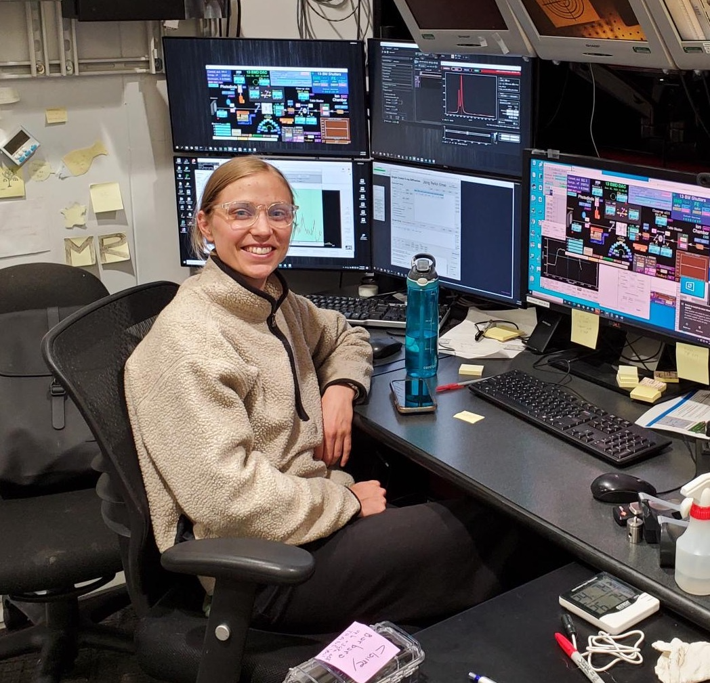

Earth and Planets Laboratory
Carnegie Institution for Science
czurkowski@carnegiescience.edu

I am an experimental mineral physicist studying the chemistry and thermodynamics of Earth and planetary deep interiors. I specialize in the combined use of synchrotron single-crystal and powder diffraction techniques in the diamond anvil cell to explore petrological systems at multi-megabar pressures and temperatures (P-T) Currently in my postdoc, I am investigating high P-T post-post spinel transitions, iron charge ordering and cation partitioning in oxides and silicates, and the mineralogy of natural and synthetic diamond inclusions. This crystallographic research contributes to our understanding of the mantle structure of super-Earths, the chemistry and dynamics of Earth’s deep interior, and the formational environments of diamonds in Earth’s mantle.
Professional Experience:
[2022 - present] High Pressure Physics - Postdoctoral Researcher, Lawrence Livermore National Labtoratory, working with Zsolt Jenei.
[2021 - 2022] Postdoctoral Fellow, Earth and Planets Laboratory, Carnegie Institution for Science, working with Yingwei Fei. Education:
[2021] Ph.D. University of Chicago (Geophysical Sciences)
[2016] B.S. San Francisco State University (Geology)
Zurkowski C.C., Lavina B., Case A., Swadba K., Chariton S., Prakapenka V.B., and Campbell A.J. Fe5S2 identified as a host for sulfur in Earth and planetary cores. Earth and Planetary Science Letters, 593, 117650 DOI
Zurkowski C.C., Lavina B., Chariton S., Prakapenka V.B., and Campbell A.J. Stability of Fe2S and Fe12S7 to 125 GPa– implications for S-rich planetary cores. Geochemical Perspectives Letters, 21, 47 - 52. DOI Zurkowski C.C., Lavina B., Chariton S., Greenberg E., Prakapenka V.B., and Campbell A.J. (2021) The crystal structure of Fe2S at 90 GPa based on single-crystal X-ray diffraction techniques. American Mineralogist: Journal of Earth and Planetary Materials, 107, 739-743. DOI Zurkowski C. C., Lavina B., Chariton S., Greenberg E., Tkachev S. N., Prakapenka, V.B., and Campbell A. J. (2020) The novel high-pressure/high-temperature compound Co12P7 determined from synchrotron data. Acta Crystallographica E76, 1665-1668. DOI Accepted Publications:Zurkowski C. C., Lavina B., Brauser N. M., Davis A. H., Chariton S., Tkachev S., Greenberg E., Prakapenka V. B., and Campbell A. J. Pressure-induced C23-C37 transition and compression behavior of orthorhombic Fe2S to Earth's core pressures and high temperatures. American Mineralogist, in press. DOI
Publications in Revision:Zurkowski C. C., Yang J., Chariton S., Prakapenka V. B., and Fei Y. Synthesis of an eight-coordinated Fe3O4 high-pressure phase: Implications for the mantle structure of super-Earths. In review at Journal of Geophysical Research, Planets
Invited Talks
[2022] Lawrence Livermore National Laboratory, High-Pressure Physics Group,
"Crystallography at the extremes: Insights into Earth and exoplanetary deep interiors"
[2021] Carnegie Institution for Science, Experimental Petrology and Mineral Physics Group,
"High P-T multigrain synthesis and the importance of powder and single crystal X-ray diffraction techniques"
[2021] Carnegie Institution for Science, Experimental Petrology and Mineral Physics Group
"Investigating the structural properties of Fe-rich sulfides to Earth’s core pressures and high temperatures"
Zurkowski C.C., Lavina, B., Yang J., Chariton S., Tkachev, S., Prakapenka V.B., and Fei Y.
Crystal structure of feiite determined by single-crystal
X-ray diffraction, presented
at 2022 meeting, IMA, Lyon, 18-22 Jul. (Poster Presentation)
Zurkowski C.C., Yang J., Chariton S., Prakapenka V.B., and Fei Y.
Synthesis of an eight-coordinated Fe3O4 high-pressure phase:
Implications for the mantle structure of super-Earths, presented
at 2022 meeting, ISoC, Erice, 3-11 Jun. (Poster Presentation)
Zurkowski C.C., Yang J., Chariton S., Prakapenka V.B., and Fei Y.
Synthesis of an eight-coordinated Fe3O4 high-pressure phase:
Implications for the mantle structure of super-Earths Abstract 1459 presented
at 2022 meeting, LPSC, 7-11 Mar. (Poster Presentation)
Zurkowski, C.C., Swabda, K., Case, A., Lavina, B., Chariton, S., Greenberg E., Prakapenka V.B., and Campbell A.J. (2021)
Synthesis and characterization of a new complex iron sulfide at Earth’s outer core conditions. Abstract DI35D-0062 presented
at 2021 meeting, AGU, Dec. 15 (Poster Presentation)
Zurkowski, C.C., Lavina, B., Chariton, S., Greenberg E., Prakapenka V.B., and Campbell A.J. (2021)
Phase stability and structural properties of Fe2S and its analog Co2P
at high pressures and temperatures. Abstract EGU21-1862 presented
at 2021 meeting, EGU, 26 Apr. (Oral Presentation)
Zurkowski, C.C., Lavina, B., Chariton, S., Greenberg E., Prakapenka V.B., and Campbell A.J. (2020)
Phase stability and structural properties of Fe2S and its analog Co2P
at high pressures and temperatures. Abstract MR024-05 presented
at 2020 meeting, AGU, 1-17 Dec. (Oral Presentation)
Zurkowski, C.C., Davis A.E., Chariton, S., Prakapenka, V.B., and Campbell, A.J. (2020)
A hexagonal Fe3S phase at Earth's core conditions. Abstract. COMPRES Annual Meeting
(Oral Presentation)
Zurkowski C.C., Brauser, N.M., Greenberg, E., Prakapenka, V.B., and Campbell, A.J. (2019) Phase stability and thermal equations of state of Fe3S and Fe2S polymorphs to Earth's core pressures and high temperatures. Abstract. COMPRES Annual Meeting (Poster Presentation) Zurkowski, C.C., Chidester, B.A., Greenberg, E., Prakapenka, V.B., and Campbell, A.J.(2018) Phase relations in the Fe--S--O system to Earth and planetary core conditions. Abstract MR42A-02 presented at 2018 meeting, AGU, Washington, D.C., 10-14 Dec. (Oral Presentation)
Zurkowski, C.C., Chidester, B.A., Greenberg, E., Prakapenka, V.B. and Campbell, A.J. (2018) Stability of the high pressure phase Fe3(S,O)2 to Earth and planetary core conditions in the Fe-S-O system. Abstract. COMPRES Annual Meeting. (Oral Presentation) Zurkowski, C.C., Chidester, B.A., Greenberg, E., Prakapenka, V.B. and Campbell, A.J. (2018) Stability of the high pressure phase Fe3(S,O)2 to Earth and planetary core conditions in the Fe-S-O system. Abstract. COMPRES Annual Meeting. (Poster Presentation) Zurkowski, C.C., Chidester, B.A., Davis, A.H., Brauser, N.M., Greenberg, E., Prakapenka, V.B. and Campbell, A.J.(2017) Stability of the high pressure phases Fe3S2 and Fe2S to Earth's core pressures in the Fe-S-O and Fe-S-O-Si systems. Abstract MR54A-07 presented at 2017 meeting, AGU, New Orleans, Louisiana, 10-15 Dec. (Oral Presentation)
Brennan, M., Zurkowski, C.C., Chidester, B.A., and Campbell, A.J.(2017) Deep-Earth equilibration between molten iron and solid silicates. Abstract MR43C-0483 presented at 2017 meeting, AGU, New Orleans, Louisiana, 10-15 Dec. (Poster Presentation)
Zurkowski, C.C., Chidester, B.A., Davis, A.H., Brauser, N.M., Greenberg, E., Prakapenka, V.B. and Campbell, A.J. (2017) Stability of the high pressure phase Fe3S2 up to 175 GPa in the Fe-S-O system. Abstract. COMPRES Annual Meeting. (Poster Presentation) Awards:
[2021] Advances in synchrotron-based research towards understanding the structure,
evolution, and dynamics of Earth and planetary interiors workshop postdoc participation award, APS
[2020] Arts, Science + Culture Initiative Graduate Collaboration Grant awarded
[2019] Student Presentation Award, COMPRES Annual Meeting
[2018] Student Presentation Award, COMPRES Annual Meeting
[2018-2021] NSF Graduate Research Fellowship
[2017] Outstanding Student Paper Award, Mineral and Rock Physics, AGU Fall Meeting
[2017] McCormick Fellowship, University of Chicago
[2016] Department Honoree, San Francisco State University
[2013-2016] Deans List, Pratt Institute, University of Maryland, San Francisco State University
[2014] Distinguished Flying Cross Scholarship
[2013] Presidential Scholarship, Pratt Institute
[2013] Valedictorian, The John Carroll School
[2013] Judith Resnik Award for Women in the Sciences
[2013] William J. Sacco Award for Applied Mathematics Scholarship
[2013] Math, Physics, and Art Student of the Year
[2022] Carnegie Trustee poster session presenter
[2022] AGU session chair convener
[2021] Advances in synchrotron-based research towards understanding the structure,
evolution, and dynamics of Earth and planetary interiors workshop, APS, session chair
[2020] Art-science interview with Notre
[2020] Art-science interview with Space Us
[2019] Art-science interview with UChicago News
[2019] Twitter account manager for AGU's Mineral and Rock Physics section
[2019] Instagram account manager for @ArtSciInitiative
[2019-2020] Vice Chair of COMPRES student planning committee
[2019-2020] AGU student representative for Mineral and Rock Physics
[2018-2019] COMPRES student planning committee member
[2018] Women in Graduate Science Student Leadership Team - University of Chicago - Geophysical Sciences representative
[2018] Physical Sciences Divison Dean's Student Advisory Committee - University of Chicago - Geophysical Sciences representative
[2017] Docent in the mineralogy and meteorite exhibitions of the Field Museum in Chicago
[2017] Math and science tutor at the Marillac Social Center in Chicago
[2016] UChicagoGrad Lab Tours (Featured Speaker)
[2016] Upward Bound Tutoring Program serving high school students of low income families
[2016] Argonne National Lab's Hour of Code volunteer at Peck Elementary School
[2016] Mentor Matching Engine mentor for high school STEM students at the Illinois Science and Technology Institute
Check out this UChicago News article discussing the relationship
between my research and my textile design.
An edited version of this article was also published by APS: